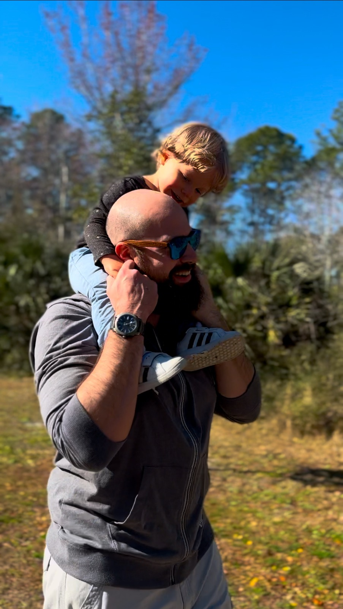

My name is Austin, im currently 37 years old, and im just now really getting into coding. I started with HTML and jump to learning a bit of python after that for a few weeks, but I felt that I should go back to HTML and really get a good understanding of it before I move on to anything else.
Most of my life, I kind of just went with everything and never really tried to really learn anything new, but I have always been interested in coding and how it works. I have always been a gamer and have always wanted to learn how to make my own games, so I figured that I should start with the basics and work my way up from there.
Im really doing all of this now, for really only 2 reasons. The first reason is I want to challenge myself, and see what I can do. The second reason is that I want to be able to provide a better life for my son Arden. I want to be able to have the opertunity to take him places and get him the things that he needs while growing up, and also to show him that you can do anything you put your mind to.
